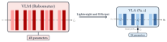
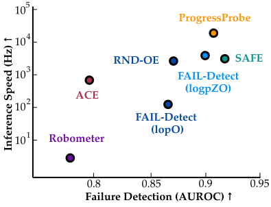
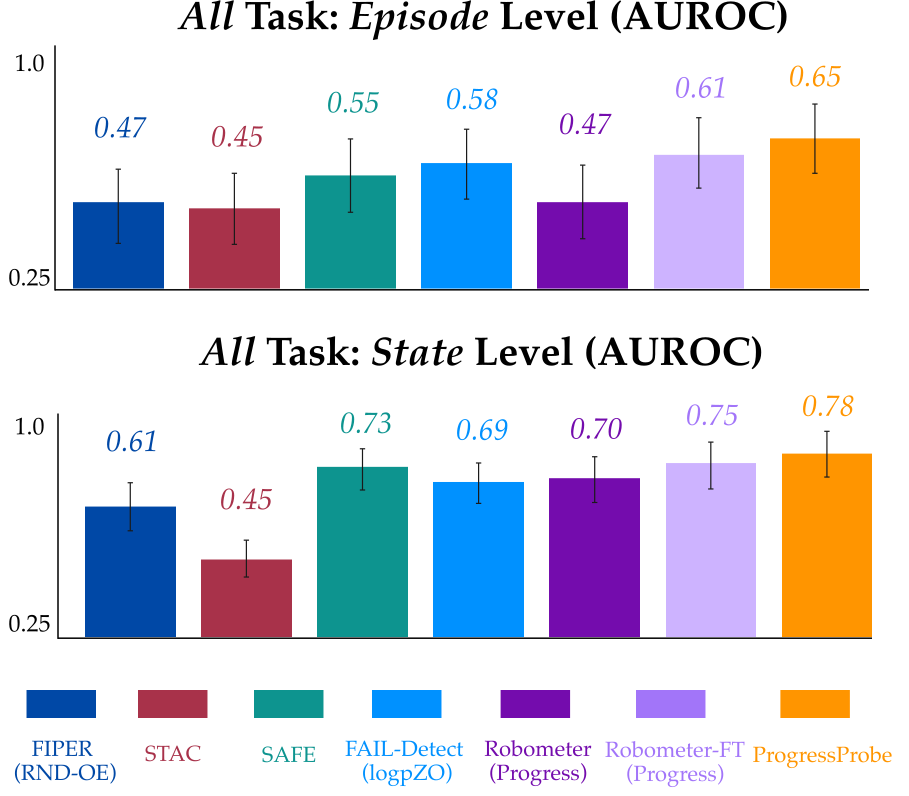
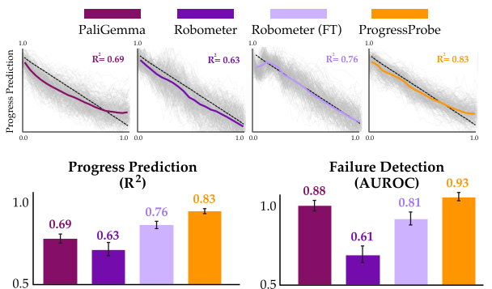

No External Monitor
P2 reads task progress from activations the VLA already computes, running 5×–20,000× faster than foundation-model monitors.

Our key insight is that a VLA's internal activations encode how far the policy has progressed through a task. In successful executions, this encoded progress advances predictably with elapsed time; when the policy fails or stalls, it falls behind. Progress Probes (P2) turn this signal into a runtime monitor in three steps:
Labeling progress. Each timestep of a successful demonstration is labeled with its normalized time remaining, ζt = 1 − t/T, which decreases from 1 at the start of the task to 0 at the end. These labels require no human supervision and no failure data.
Linear progress probes. We pass the demonstrations through π0.5, mean-pool the activations zi at a layer i across tokens, and fit a linear regression ζ̂ = w⊤zi + b to predict task progress.
Runtime monitoring. At deployment, the probe reads the activations already computed during inference and compares its estimate to the nominal progress 1 − t/μT, where μT is the mean successful trajectory length. A failure is flagged when the estimate lags behind nominal by more than a threshold δ; finishing ahead of schedule is not penalized.
A runtime monitor watches the policy as it executes and raises an alarm when the rollout is unlikely to succeed. On a successful trajectory, the progress estimated by P2 closely follows the expected progress and never enters the detection region; on a failed trajectory, it falls behind schedule and crosses the boundary.
We want a monitor that is accurate, fast to react, and practical to deploy alongside the policy:
Reliable discrimination. The monitor should separate successes from failures, firing on failed rollouts while keeping false alarms on successful ones rare. P2 only flags a rollout once its estimated progress lags the nominal trajectory by more than a calibrated threshold.
Early detection. A failure flagged at the end of an episode is of little use; the monitor should fire as soon as the execution goes off-course, leaving time to intervene. Because P2 scores every timestep, it reacts as soon as progress stalls.
No failure data required. Failures are diverse and costly to collect, so the monitor should be trainable from successful executions alone. P2's progress labels come directly from successful demonstrations.
Lightweight at runtime. The monitor should keep pace with the policy without adding latency or relying on a large external model. A VLM-based monitor such as Robometer runs a separate 4B-parameter model at every check, whereas P2 adds only a 2K-parameter linear readout on activations the VLA already computes during inference.


We evaluate P2 on the π0.5 VLA across 6 simulated VLABench tasks and 6 real-world manipulation tasks, comparing against runtime monitors that use image inputs, action outputs, VLA internals, and large reward models.
A useful monitor must catch failures early while rarely firing on successful rollouts. We calibrate each detector to a 5% false-positive rate and measure how far into the episode it first flags a failure. P2 detects failures on par with state-of-the-art monitors, at 0.60 of the episode on average compared with 0.53 for SAFE-LSTM and 0.56 for Robometer-FT, even though it uses only the current activation and is trained without any failure labels.
| Detector | TPR @ 5% FPR by episode fraction ↑ | Det. time ↓ (frac. of ep.) |
|||
|---|---|---|---|---|---|
| 25% | 50% | 75% | 100% | ||
| Progress Probe (P2) | 0.00 | 0.19 | 0.54 | 0.64 | 0.60 |
| SAFE-MLP | 0.00 | 0.08 | 0.41 | 0.77 | 0.75 |
| SAFE-LSTM | 0.11 | 0.37 | 0.59 | 0.72 | 0.53 |
| Robometer (progress) | 0.01 | 0.08 | 0.21 | 0.33 | 0.67 |
| Robometer FT (progress) | 0.00 | 0.34 | 0.62 | 0.72 | 0.56 |
Beyond firing early, a monitor must reliably tell successful rollouts apart from failed ones. We report failure-detection AUROC at two levels: episode, which classifies a whole rollout from its maximum score, and state, which classifies every timestep. On hardware, P2 achieves the highest episode- and state-level AUROC of all monitors (0.65 and 0.78), including SAFE and Robometer-FT, which are trained with additional failure data. In simulation, it remains competitive with these supervised baselines without using any failure labels.
We also test generalization by training each monitor on 3 of the 6 tasks and evaluating on the 3 held-out tasks, across all 20 possible splits. P2 transfers well to unseen tasks, reaching a state-level AUROC of 0.81 on hardware, the best of all monitors, and 0.794 in simulation.

| Method | Block Stack |
Knife Put |
Stacked Utensil |
Candy Bag |
Coffee Bag |
Coffee Bean |
Average AUROC |
|---|---|---|---|---|---|---|---|
| FAIL-Detect (lopO) | 0.40 | 0.46 | 0.59 | 0.67 | 0.49 | 0.42 | 0.54 |
| FIPER (RND-OE) | 0.61 | 0.82 | 0.74 | 0.50 | 0.60 | 0.52 | 0.61 |
| FIPER (ACE) | 0.61 | 0.68 | 0.62 | 0.50 | 0.60 | 0.50 | 0.57 |
| STAC | 0.59 | 0.57 | 0.37 | 0.31 | 0.57 | 0.34 | 0.45 |
| SAFE-MLP | 0.60 | 0.80 | 0.60 | 0.72 | 0.39 | 0.38 | 0.73 |
| SAFE-LSTM | 0.70 | 0.70 | 0.57 | 0.76 | 0.50 | 0.33 | 0.58 |
| FAIL-Detect (logpZO) | 0.47 | 0.94 | 0.79 | 0.90 | 0.72 | 0.74 | 0.69 |
| Robometer (progress) | 0.53 | 0.51 | 0.73 | 0.94 | 0.61 | 0.66 | 0.70 |
| Robometer (success) | 0.33 | 0.33 | 0.30 | 0.46 | 0.24 | 0.25 | 0.41 |
| Robometer FT (progress) | 0.63 | 0.56 | 0.88 | 0.95 | 0.66 | 0.53 | 0.75 |
| Robometer FT (success) | 0.32 | 0.43 | 0.28 | 0.39 | 0.20 | 0.18 | 0.34 |
| Progress Probe (P2) | 0.87 | 0.80 | 0.81 | 0.92 | 0.66 | 0.26 | 0.78 |
| Method | Block Stack |
Knife Put |
Stacked Utensil |
Candy Bag |
Coffee Bag |
Coffee Bean |
Average AUROC |
|---|---|---|---|---|---|---|---|
| FAIL-Detect (lopO) | 0.51 | 0.66 | 0.54 | 0.55 | 0.60 | 0.49 | 0.56 |
| FIPER (RND-OE) | 0.40 | 0.83 | 0.76 | 0.62 | 0.51 | 0.56 | 0.61 |
| FIPER (ACE) | 0.61 | 0.68 | 0.62 | 0.50 | 0.60 | 0.50 | 0.59 |
| STAC | 0.59 | 0.57 | 0.37 | 0.31 | 0.57 | 0.34 | 0.46 |
| SAFE-MLP | 0.60 | 0.78 | 0.64 | 0.75 | 0.53 | 0.31 | 0.60 |
| SAFE-LSTM | 0.54 | 0.64 | 0.56 | 0.70 | 0.51 | 0.14 | 0.51 |
| FAIL-Detect (logpZO) | 0.48 | 0.80 | 0.77 | 0.83 | 0.50 | 0.75 | 0.69 |
| Progress Probe (P2) | 0.87 | 0.75 | 0.84 | 0.94 | 0.60 | 0.84 | 0.81 |
| Method | Episode ↑ | State ↑ |
|---|---|---|
| FAIL-Detect (lopO) | 0.881 | 0.857 |
| FIPER (RND-OE) | 0.874 | 0.850 |
| FIPER (ACE) | 0.793 | 0.790 |
| STAC | 0.477 | 0.442 |
| SAFE-MLP | 0.930 | 0.894 |
| SAFE-LSTM | 0.923 | 0.851 |
| FAIL-Detect (logpZO) | 0.904 | 0.888 |
| Robometer (progress) | 0.779 | 0.666 |
| Robometer (success) | 0.514 | 0.316 |
| Robometer FT (progress) | 0.922 | 0.830 |
| Robometer FT (success) | 0.505 | 0.407 |
| Progress Probe (P2) | 0.909 | 0.788 |
| Method | Episode ↑ | State ↑ |
|---|---|---|
| FAIL-Detect (lopO) | 0.667 | 0.656 |
| FIPER (RND-OE) | 0.661 | 0.557 |
| FIPER (ACE) | 0.843 | 0.800 |
| STAC | 0.482 | 0.434 |
| SAFE-MLP | 0.896 | 0.866 |
| SAFE-LSTM | 0.859 | 0.803 |
| FAIL-Detect (logpZO) | 0.634 | 0.571 |
| Progress Probe (P2) | 0.900 | 0.794 |
Unlike VLMs, which are trained only on images and text, VLAs are additionally trained on robot actions. To test whether this action-grounded training produces representations that better encode task progress, we train the same progress probe on the activations of four models: PaliGemma (the 3B VLM backbone of π0.5), Robometer (a 4B reward model trained on robot videos) both zero-shot and fine-tuned, and the π0.5 VLA itself.
Action data makes the difference. Probing π0.5 gives the most accurate progress prediction (R2 = 0.83, vs. 0.69–0.76 for the VLMs) and the strongest failure detection (AUROC 0.93). Seeing robots in training is not enough on its own: zero-shot Robometer, despite its robot-video training, does no better than PaliGemma. Learning to predict actions appears to shape internal representations that better capture whether the policy is on track.

@inproceedings{TODO,
title={Progress Probes (P$^2$): Lightweight Runtime Monitoring for Vision-Language-Action Models},
author={TODO},
booktitle={TODO},
year={TODO}
}